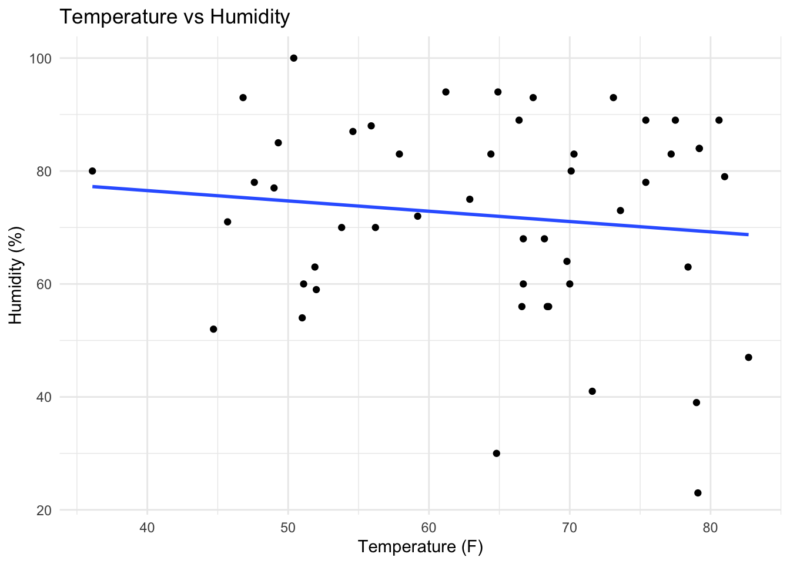
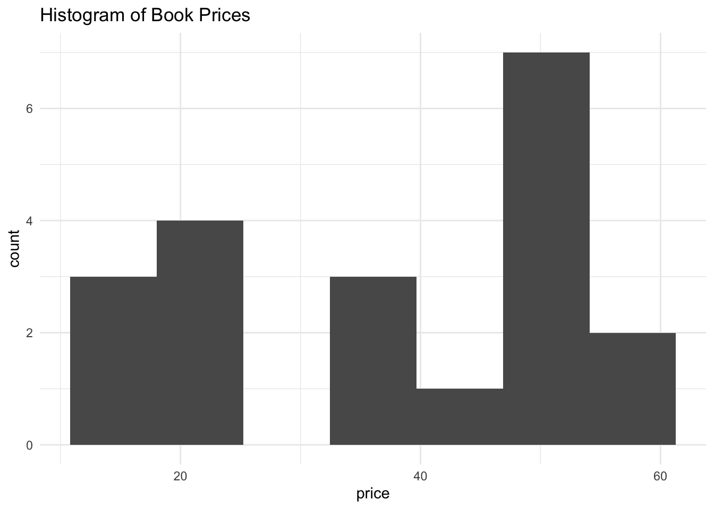

In this section, you will gain more practice working with public APIs, this time using a public weather API, WeatherAPI. The first thing you’ll need to access the API is an API key. You can sign up for a key here: https://www.weatherapi.com/signup.aspx
Exercise 1
Use the http://api.weatherapi.com/v1/current.json URL to access the API and obtain real-time weather data. Note that you will want to specify three query parameters, at least – key, which should be set to your individual API key, q, which should equal the city name of a specified location – for example q = "Isla Vista" – and aqi, which indicates whether you want to obtain air quality data ("yes" or "no").
Obtain current real-time weather data for fifty randomly-selected cities. I have saved a data file containing the names of fifty cities to /data/cities.csv. This ensures that you are all working with the same locations (although your results will still differ, depending on when you obtain the data).
library(tidyverse)
── Attaching core tidyverse packages ──────────────────────── tidyverse 2.0.0 ──
✔ dplyr 1.1.4 ✔ readr 2.1.5
✔ forcats 1.0.0 ✔ stringr 1.5.1
✔ ggplot2 3.5.1 ✔ tibble 3.2.1
✔ lubridate 1.9.3 ✔ tidyr 1.3.1
✔ purrr 1.0.2
── Conflicts ────────────────────────────────────────── tidyverse_conflicts() ──
✖ dplyr::filter() masks stats::filter()
✖ dplyr::lag() masks stats::lag()
ℹ Use the conflicted package (<http://conflicted.r-lib.org/>) to force all conflicts to become errors
library(jsonlite)
Attaching package: 'jsonlite'
The following object is masked from 'package:purrr':
flatten
library(httr)cities <-read.csv("./data/cities.csv")data <-list()for(i in1:50){ l <-list(key ="9d229f421fc6437a9ab00002242210",q = cities$names[i],aqi ="yes" ) res =GET("http://api.weatherapi.com/v1/current.json", query = l) con <-fromJSON(rawToChar(res$content)) data[[i]] <- con}
Exercise 2
Write code in R or Python (your choice) to extract and store the following data for each location:
City name
Country
Whether or not it is currently daytime there
Temperature (in Fahrenheit)
Humidity
Weather description (condition text; for example, “Mist”, “Clear”, etc.)
# A tibble: 50 × 9
city country is_daytime temperature_f humidity weather_desc wind_speed_mph
<chr> <chr> <lgl> <dbl> <int> <chr> <dbl>
1 Shangh… China TRUE 59.2 72 Partly clou… 4.7
2 Chongq… China TRUE 64.4 83 Sunny 2.2
3 Palemb… Indone… TRUE 77.5 89 Partly clou… 2.2
4 Berlin Germany FALSE 49.3 85 Clear 3.8
5 Seoul South … TRUE 51 54 Sunny 2.2
6 Tangsh… China TRUE 51.1 60 Sunny 3.6
7 Cairo Egypt FALSE 68.5 56 Clear 12.8
8 Warsaw Poland FALSE 47.6 78 Clear 4.7
9 Zunyi China TRUE 54.6 87 Sunny 2.2
10 Saitama Japan TRUE 73.6 73 Partly clou… 8.5
# ℹ 40 more rows
# ℹ 2 more variables: precipitation_mm <dbl>, air_quality_us_epa <int>
Exercise 3
Create a scatterplot of temperature vs. humidity. Add a linear regression line to the plot. What are the estimated intercept and slope values for this linear regression? Does there appear to be a significant relationship between temperature and humidity?
ggplot(complete_df, aes(x = temperature_f, y = humidity)) +geom_point() +geom_smooth(method ="lm", se = F) +labs(title ="Temperature vs Humidity",x ="Temperature (F)",y ="Humidity (%)") +theme_minimal()
`geom_smooth()` using formula = 'y ~ x'

model <-lm(temperature_f ~ humidity, data = complete_df)summary(model)
Call:
lm(formula = temperature_f ~ humidity, data = complete_df)
Residuals:
Min 1Q Median 3Q Max
-27.520 -10.093 2.262 10.263 17.720
Coefficients:
Estimate Std. Error t value Pr(>|t|)
(Intercept) 70.20105 7.13014 9.846 4.2e-13 ***
humidity -0.08226 0.09613 -0.856 0.396
---
Signif. codes: 0 '***' 0.001 '**' 0.01 '*' 0.05 '.' 0.1 ' ' 1
Residual standard error: 11.83 on 48 degrees of freedom
Multiple R-squared: 0.01503, Adjusted R-squared: -0.005495
F-statistic: 0.7322 on 1 and 48 DF, p-value: 0.3964
The estimated y-intercept is 80% humidity, and the slope is approximately (79-70)/(40-80) = -0.0.225.The p-value indicates there is no significant relationship between temperature and humidity.
Exercise 4
Create a bar chart of the EPA air quality index values. What does the distribution of air quality look like? Identify the location(s) with the best air quality and the worst air quality.
ggplot(complete_df, aes(x =factor(air_quality_us_epa))) +geom_bar() +labs(title ="Distribution of the US EPA Air Quality Index",x ="US EPA Air Quality Index",y ="Count") +theme_minimal()
Determine the chance of rain (in percentage) for Goleta, California tomorrow. (Note that “tomorrow” may vary depending on when you do this assignment; that is fine.)
Based on the percentage you obtained, do you think it will rain in Goleta tomorrow?
Part Two: Scraping Books
In this section, you’ll practice your web scraping skills by experimenting with a fictional online bookstore located at https://books.toscrape.com/. Use the tools that we demonstrate in class to do the following, in either R or Python (your choice):
Exercise 9
Scrape the first 20 results from this site. Create a data frame (or tibble) that stores the following for each book:
Title
Price (excluding tax)
Star rating
Whether the book is in stock
library(rvest)
Attaching package: 'rvest'
The following object is masked from 'package:readr':
guess_encoding
# html <- read_html('https://books.toscrape.com/')# write_html(html, file = "hw2.html")html <-read_html(x ="hw2.html")title <- html %>%html_elements('a') %>%html_attr("title") %>%na.omit() %>%as.vector()price <- html %>%html_elements('p.price_color') %>%html_text() %>%str_remove("£") %>%as.numeric()star_rating <- html %>%html_elements('p.star-rating') %>%html_attr("class")stock <- html %>%html_elements('p.instock.availability') %>%html_text(trim = T)book_20 <-data.frame(title, price, star_rating, stock)
Exercise 10
Create a histogram of prices for these 20 books. What is the average price?
library(ggplot2)ggplot(book_20, aes(x = price)) +geom_histogram(bins =7) +labs(title ="Histogram of Book Prices") +theme_minimal()

avg_price <-mean(book_20$price)print(paste("The average price is", avg_price))
[1] "The average price is 38.0485"
Exercise 11
Create a bar chart of star rating for these 20 books. Find the book(s) with the highest and lowest star ratings.
ggplot(book_20, aes(x = star_rating)) +geom_bar() +labs(title ="Bar Chart of Book Star Ratings") +theme_minimal()
title star_rating
1 Sapiens: A Brief History of Humankind star-rating Five
2 Set Me Free star-rating Five
3 Scott Pilgrim's Precious Little Life (Scott Pilgrim #1) star-rating Five
4 Rip it Up and Start Again star-rating Five
title star_rating
1 Tipping the Velvet star-rating One
2 Soumission star-rating One
3 The Requiem Red star-rating One
4 The Black Maria star-rating One
5 Olio star-rating One
6 Mesaerion: The Best Science Fiction Stories 1800-1849 star-rating One
Books “Sapiens: A Brief History of Humankind”, “Set Me Free”, “Scott Pilgrim’s Precious Little Life (Scott Pilgrim #1)”, “Rip it Up and Start Again” have the highest star rtings. Books “Tipping the Velvet”, “Soumission”, “The Requiem Red”, “The Black Maria”, “Olio”, “Mesaerion: The Best Science Fiction Stories 1800-1849” have the lowest star ratings.
Exercises for 234 Students
Exercise 12
Extend your skills; instead of scraping only the first 20 books, scrape the first two hundred books.
For each book, in addition to the information we stored previously (title, price, star rating, etc.), figure out how to extract the category (i.e., Travel, Mystery, Classics, etc.).
Exercise 13
What is the most common category? What is the least common?